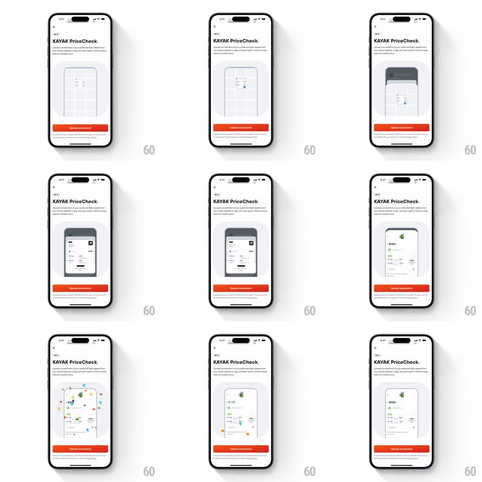

Media
Frame-by-frame

Rebuild this animation 1:1: Kayak's PriceCheck intro - an animated phone illustration that shows a flight screenshot dropping into a dashed upload frame, getting scanned, and resolving into priced results.

Rebuild this animation 1:1: Kayak's PriceCheck intro - an animated phone illustration that shows a flight screenshot dropping into a dashed upload frame, getting scanned, and resolving into priced results. ## Integration Integration: stack-agnostic spec - springs given as stiffness/damping, timed motions as duration + curve; map every value to your framework and animation library of choice. ## Scene The Kayak tools page (PriceCheck flagged BETA among Price Alerts, Flight Tracker, Measure your bag), then the PriceCheck explainer: headline "KAYAK PriceCheck.", a line of body copy, a large light-gray panel containing a phone illustration with a dashed upload frame, and an orange "Upload screenshot" button pinned at the bottom. ## Motion spec Pattern: looping product illustration. - The illustration loops a four-beat story inside the phone mock: 1. Empty dashed frame idles (dashes march slowly, 1s). 2. A mini screenshot (flight listing card) drops in from above (translateY -40px to 0, 400ms, slight overshoot) and snaps into the frame; the dashes stop. 3. A scan dot sweeps the screenshot (a small blue dot travels top to bottom, 600ms) with a thin highlight line; skeleton rows shimmer in behind it. 4. The screenshot resolves into a filled result card (price, airline rows fade in, 300ms); a confetti burst pops from the card (10-14 particles, 700ms, gravity drift), then the loop resets with a crossfade. - Page entry: headline, copy, illustration panel, and button stagger up (translateY 16px, 250ms, 90ms apart). - The orange button has a subtle idle pulse (scale 1 to 1.02, 2s). ## Calibration - The loop is self-contained in the illustration panel - the rest of the page never moves after entry. - Confetti stays inside the phone mock's bounds. ## Reduced motion Static illustration of the resolved result; no loop. ## Don't miss - Kayak orange is reserved for the button and tiny accents; the illustration is grayscale until the price resolves. - The dashed frame is the affordance - it must read as "drop a screenshot here" before anything drops.